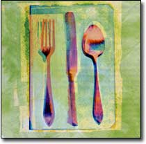

Eco-eating is no easy affair. It takes care and work to make informed decisions. Every day, there is something new to learn about our foods - how they are grown or raised, what the governmental policies are or are not, and how farming affects families all over the world.
The sad state of our food system can feel daunting; yet I believe that together we can visit the issues and celebrate our choices for change. Every day new projects emerge from creative people offering up potential solutions to food-related problems. Our job, as shoppers, is to encourage them and to buy the fruits of their labor.
Many of the issues lead to value judgments and difficult ethical choices. Do we feed the hungry by developing higher-yielding crops, even if it might harm the Earth? How can we make good, clean food available to all, not just those who can afford the higher cost? Do I have the "right" to purchase genetically modified (GM) foodstuffs for school lunches when I am responsible for other people's children? These are some of the questions being asked in conversations across the country, and ones we each need to ask ourselves.
Our individual decision-making power helps create our food system - each buying decision we make influences what is marketed to us. We need to act as "food citizens" by taking personal responsibility for shaping our food system. The Wisconsin Foodshed Research Project has defined a food citizen as follows: "Food citizens are eaters who take an interest in food beyond its affordability and availability. Food citizens are concerned about environmental sustainability, the health of farmers and consumers, issues of justice for farmworkers and the poor, and democratic participation in determining where our food system is heading." So if we decide to take on this responsibility, how do we start thinking on a personal level about the food ethics and values?
Scholars study agricultural ethics and citizens' groups take on the topic, too. In March 1997, the Soul of Agriculture project was launched; Paul Thompson, Purdue University professor and agricultural ethics author, noted at one early gathering: "We need a production ethic for agriculture in which we are all producers, one in which we come to understand ourselves as partners with nature in reproducing the social and ecological environment where our children will themselves face the challenges of production and reproduction."
We all need to be engaged in this movement, no matter where the connec tion comes from. We are the producers of our own fare by acting as decision-makers. No matter how we look at it, every moment we ingest another morsel, it reflects a choice we have made. It is either good for the Earth and all of its beings, or not.
Of course, we are all humans, struggling to squeeze a whole meal into a fraction of time. We can only do what we can do. And yet, I know I feel best when I have made a personal choice that seems right. When I choose antibiotic-free chicken for pasta, or when I see my son chomping down on an organically grown apple, I feel good. When we run out of milk and have the genetically engineered version from the local gas station's quick-market, I cringe when the children fill their cereal bowls. I just don't feel good about it.
We can each do our part by being a good food citizen: by caring about what happens to the source from which our food comes and by choosing food that has been raised with fairness to all people and sentient beings.
Excerpted from The Eco-foods Guide by Cynthia Barstow, item no. 1695 on MOTHER'S Bookshelf [to order call (866) 803-7096]. Also available from New Society Publishers [(800) 567-6772; www.newsociety.com ].
Mother Earth News
|
 |
|
|